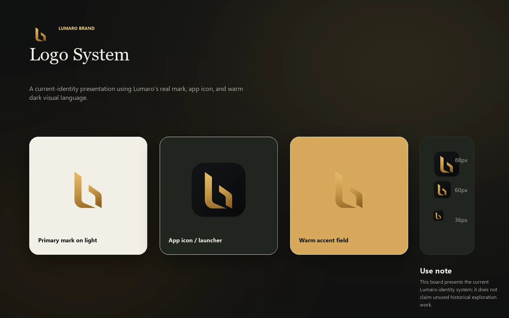
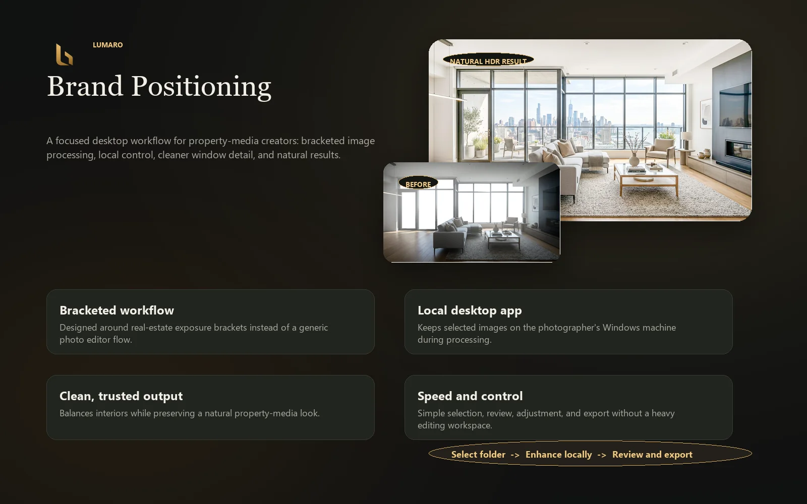
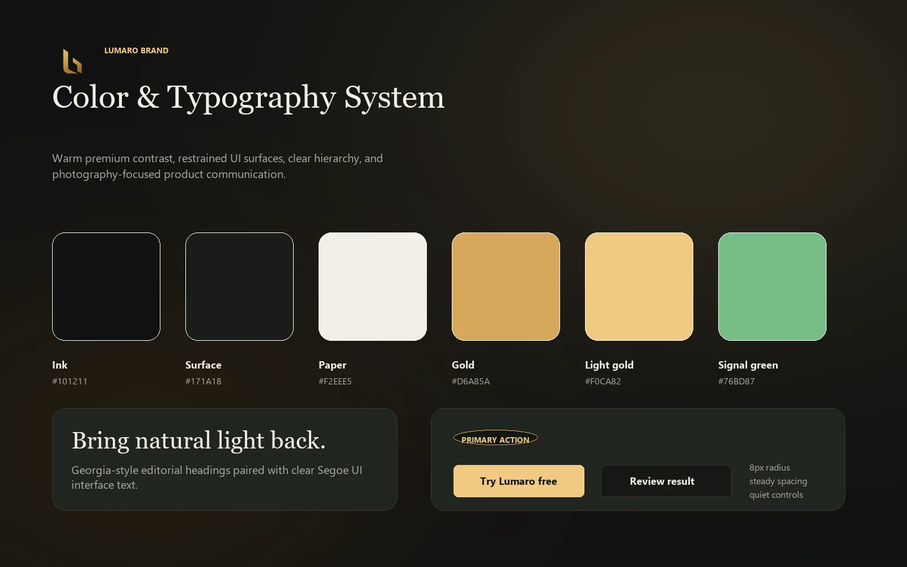
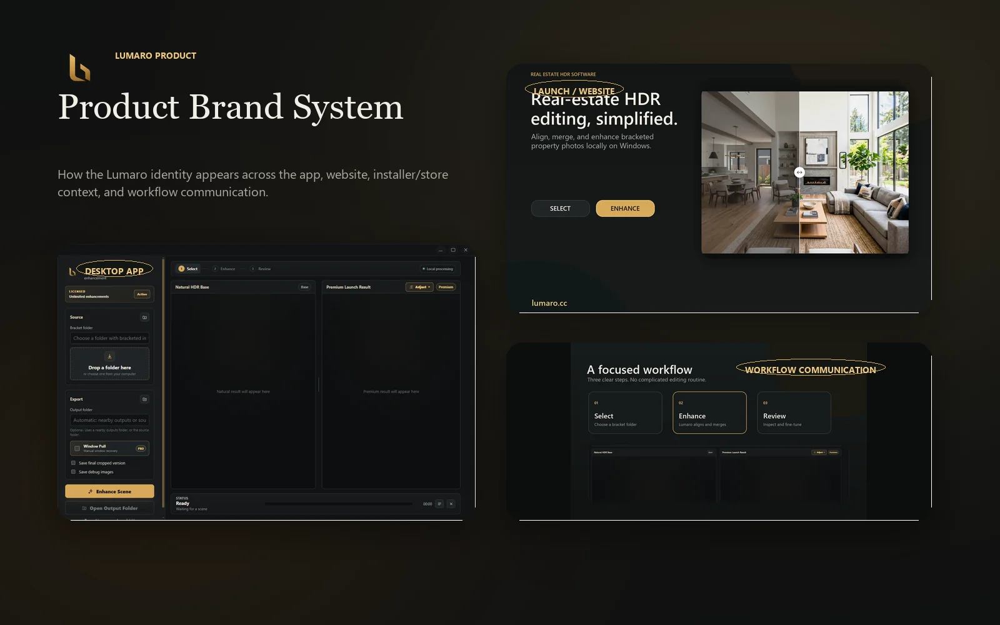

Clean confidence
The identity uses a restrained premium feel to support trust in a tool that touches client property imagery.
Brand Identity · Positioning
A brand direction for a released real-estate image-processing product, designed to feel practical, polished, and trustworthy for property-media creators.

Challenge
Lumaro serves a practical workflow: selecting bracketed images, processing them locally, reviewing before-and-after results, making adjustments, and exporting. The brand needed to feel professional and helpful, not overly technical or generic.
Creative Direction
The identity uses a restrained premium feel to support trust in a tool that touches client property imagery.
Soft light and warm accents connect the brand to interior photography and natural image enhancement.
The voice and visual system prioritize clear product explanation over abstract creative language.
The brand was designed to work across app icons, website visuals, installer context, and product UI.
Process
Brand Assets



Outcome
The brand gives Lumaro a grounded product presence that supports both practical workflow communication and a polished commercial launch experience.